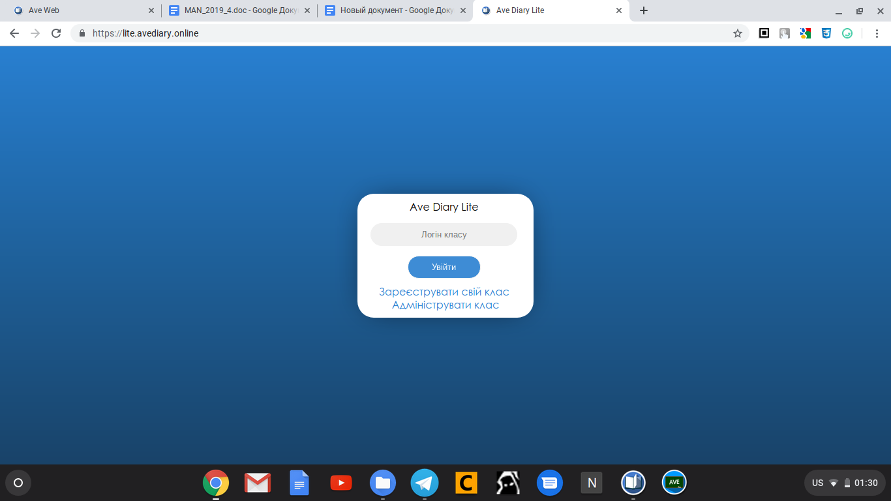
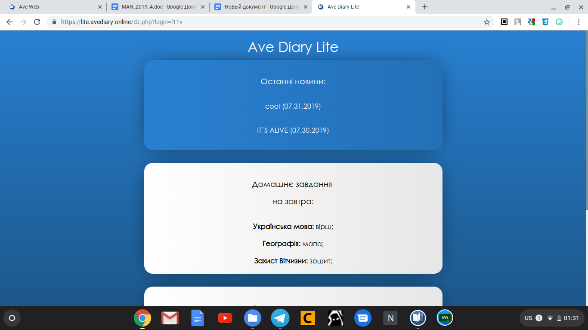

Ave Account
Ave Account
 Ave Diary Lite App
Ave Diary Lite App Ave Diary Bot Telegram
Ave Diary Bot TelegramAve Diary Lite lite.avediary.online
Ave Diary Lite – упрощённая версия сайта, с помощью которой ученики могут узнать домашнее задание не регистрируя Ave Account.
Главная страница

На ней можно зарегистрировать класс (см. инструкцию к Ave Diary), ученик-модератор может добавить домашнее задание (аналогично добавлению домашнего задания через форму для одного предмета в Ave Diary), а обычный ученик может узнать домашнее задание с помощью логина. Для этого ученику нужно ввести логин и нажать на кнопку «Увійти». После чего ученик может увидеть домашнее задание на следующий день, на сегодня и задания наы другие дни.
